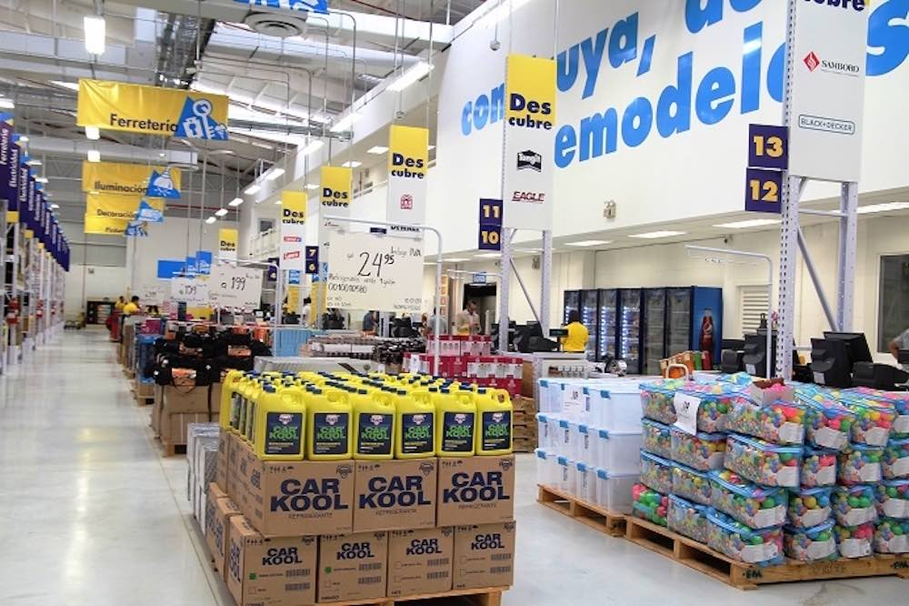

Ayudando a construir hogares

Ser la red de Super Ferreterías lider en satisfacción de nuestros clientes, colaboradores, accionistas, proveedores y comunidades donde operamos.
Conscientes de que la acción social debe trascender a clientes y trabajadores, nos hemos involucrado con las comunidades de las ciudades donde tenemos operaciones, promoviendo iniciativas orientadas a:
Adecuación de viviendas, dando prioridad a la capacitación en oficios.
Preservación del hábitat, dando prioridad a la educación ambiental.